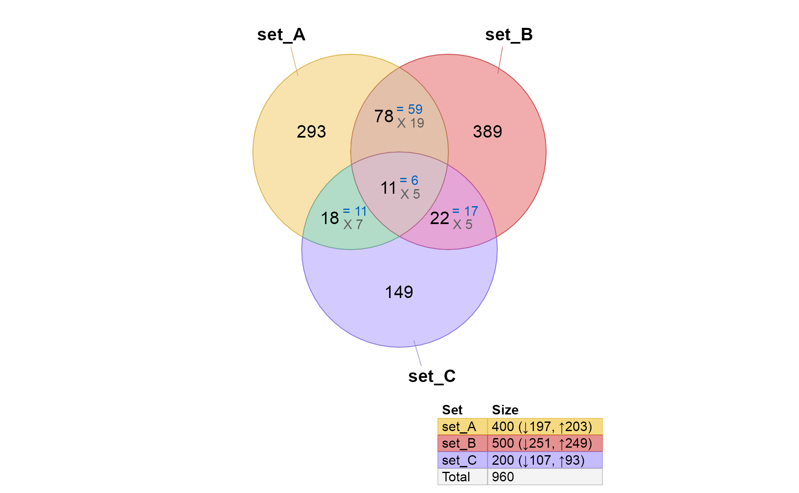
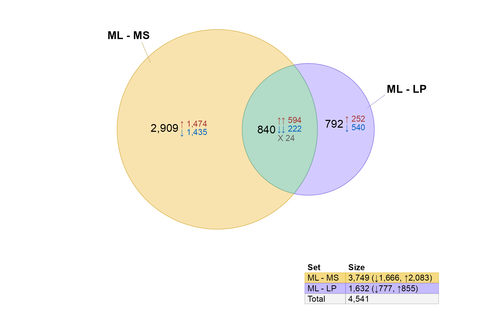
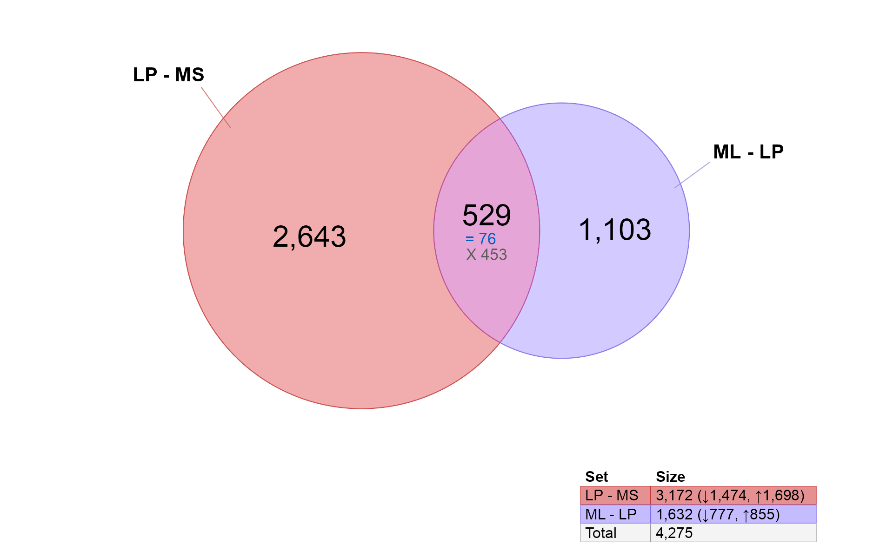
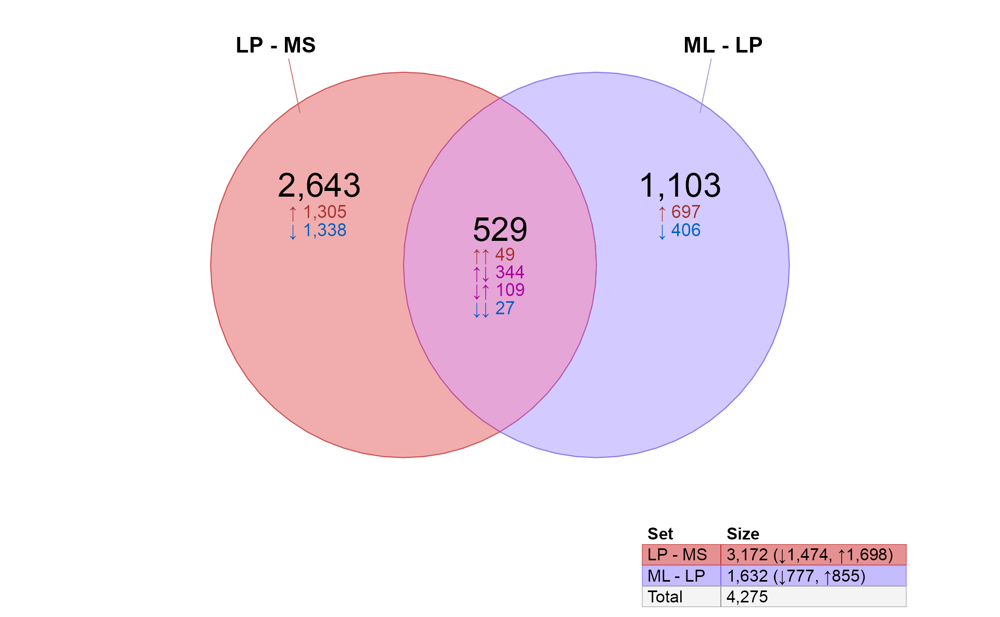
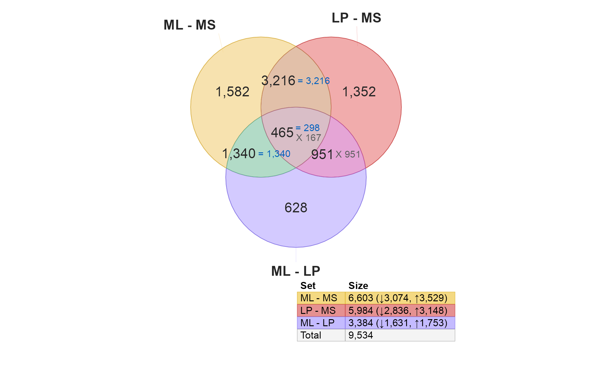

Venndir with Gene Expression Data
Source:vignettes/venndir_gene_expression.Rmd
venndir_gene_expression.RmdVenndir was inspired by gene expression data, which contains up/down
directionality. Here are some examples showing how gene expression data
can be used in venndir.
Generic example
The venndir::make_venn_test() function is useful to
generate test data.
setlist <- make_venn_test(2500, 3,
sizes=c(400, 500, 200),
do_signed=TRUE)
venndir(setlist, overlap_type="agreement")
Venndir with limma results
The limma package provides an extensive set of gene
expression data analysis tools. The steps below reproduce the
Limma Users Guide example "Illumina Use Case"
in Section 17.3. This example requires data available at http://bioinf.wehi.edu.au/marray/IlluminaCaseStudy
copied to the current working directory.
For the sake of this example, the steps assume the data is located in
a folder [HOME]/IlluminaCaseStudy, where
[HOME] is the user home directory.
illuminadir <- "~/IlluminaCaseStudy";
do_limma <- FALSE;
if (suppressPackageStartupMessages(require(limma)) && dir.exists(illuminadir)) {
do_limma <- TRUE;
}
if (do_limma) {
targets <- readTargets(path=illuminadir)
# import Illumina data
x <- read.ilmn(files="probe profile.txt.gz",
ctrlfiles="control probe profile.txt.gz",
other.columns="Detection",
path=illuminadir)
# define expressed probes
y <- neqc(x)
expressed <- rowSums(y$other$Detection < 0.05) >= 3;
y <- y[expressed,]
# calculate within-patient correlations
ct <- factor(targets$CellType)
design <- model.matrix(~0+ct);
colnames(design) <- levels(ct);
dupcor <- duplicateCorrelation(y,
design,
block=targets$Donor);
dupcor$consensus.correlation;
# fit linear model, paired by patient, with correlations
fit <- lmFit(y,
design,
block=targets$Donor,
correlation=dupcor$consensus.correlation);
# define contrasts
contrasts <- makeContrasts(ML-MS,
LP-MS,
ML-LP,
levels=design)
# fit contrasts
fit2 <- contrasts.fit(fit, contrasts);
# eBayes
fit2 <- eBayes(fit2, trend=TRUE)
}
#> Reading file ~/IlluminaCaseStudy/probe profile.txt.gz ... ...
#> Reading file ~/IlluminaCaseStudy/control probe profile.txt.gz ... ...The steps are straightforward except that this example uses a paired
linear model. Nonetheless the results is the same, the resulting object
is class MArrayLM.
The function limma::decideTests() applied adjusted
P-value and log2 fold change filtering, and produces class
TestResults which is actually a signed incidence matrix.
Take a look at the output:
if (do_limma) {
# decideTests() creates a signed incidence matrix
fit2decide <- decideTests(fit2, method="global");
print(head(fit2decide))
}
#> TestResults matrix
#> Contrasts
#> ML - MS LP - MS ML - LP
#> ILMN_2055271 0 0 0
#> ILMN_1653355 0 0 0
#> ILMN_1787689 0 0 0
#> ILMN_1745607 -1 -1 0
#> ILMN_1735045 0 0 0
#> ILMN_1659452 0 0 0A signed incidence matrix can be converted to setlist
with im_value2list(). Then call venndir().
The "im_value" refers to an incidence matrix with values
(signs), and "2list" will convert to a list.
The list returned will contain named vectors, where names
are the item labels, and values are the signs.
if (do_limma) {
limmalist <- im_value2list(fit2decide);
venndir(limmalist, sets=c(1, 2));
}
A few features are noticeable:
The
limmacontrasts"ML - MS"and"LP - MS"are shown in each Venn circle. The numbers in each circle represent statistically significant changes given thelimmathresholds.There is fairly high overlap between these gene lists,
3,681probes are shared, which is more than not shared2,922and2,303, respectively.-
Almost all the overlapping probes are changing in the same direction in these two contrasts
-
1,800probes are up in both contrasts -
1,856probes are down in both contrasts -
25probes disagree in up-down or down-up direction
-
Implied in #3, the shared probes are roughly evenly distributed between up and down.
Proportional Venn diagram (Euler)
The data can be drawn with proportional circles, otherwise known as a Euler diagram, or proportional Venn diagram.
For this diagram, we will plot sets=c(1, 3) mostly
because these are more visually interesting.
if (do_limma) {
limmalist <- im_value2list(fit2decide);
venndir(limmalist, sets=c(1, 3), proportional=TRUE);
}
overlap_type “agreement”
An alternative approach to represent concordance is by “agreement”, which combines up-up and down-down into one summary number.
Use the argument overlap_type="agreement".
if (do_limma) {
limmalist <- im_value2list(fit2decide);
venndir(limmalist, sets=c(1, 2), overlap_type="agreement");
}
overlap_type “each”
Finally, you can represent all the directional changes using
overlap_type="each".
if (do_limma) {
limmalist <- im_value2list(fit2decide);
venndir(limmalist, sets=c(1, 2), overlap_type="each");
}
Display item labels
It is sometimes interesting to show item labels inside the Venn diagram – but 3,600 text labels are too many to be displayed!
For the purpose of this example, we will filter statistical hits using a higher fold change, and more significant P-value threshold – just to reduce the labels.
In practice, examples with >3000 hits should probably never be labeled unless printing full size on a poster (and even then, with small font!)
if (do_limma) {
# increase stringency of statistical filtering
fit2decide2 <- decideTests(fit2,
p.value=1e-4,
lfc=4);
# convert to signed list
limmalist2 <- im_value2list(fit2decide2);
limmalist2 <- lapply(limmalist2, function(i){
jamba::nameVector(as.vector(i), names(i))
})
# display item labels
venndir(limmalist2,
sets=c(1, 2),
poly_alpha=0.3,
show_labels="Ni",
show_items="sign item",
item_cex=1,
item_degrees=4,
max_items=1000);
}
DIsplay item directions
The display of item labels brings up some potential benefits: it does indicate the relative density of labels, and relative quantity of up/down/mixed direction.
You can customize the item label so that it only displays the directional sign, and not the item. This technique may be good for higher number of items.
Use argument show_items="sign".
if (do_limma) {
vo6s <- venndir(limmalist2,
sets=c(1, 2),
poly_alpha=0.3,
show_labels="Ni",
show_items="sign",
item_cex=1,
max_items=1000);
}
Convert probes to genes
The first item label figure highlights an important issue:
limma and similar analysis tools test the probes, not the
genes.Therefore the results represent Illumina probes, which are not
very helpful by themselves.
Fortunately in this case, the gene data is available in
y$genes, so we can convert each row to a gene symbol.
However there are multiple probes per gene symbol. For the sake of this
example, we will choose the first of each gene symbol from the
statistical hits.
There is another Jam R package function that may be helpful:
genejam::freshenGenes(). This function takes one of more columns of gene symbols, gene accessions, gene identifiers, and returns the “best matching result” using Bioconductor gene annotation data.
if (do_limma) {
# convert probe hits to gene hits
limmalist2 <- im_value2list(fit2decide2);
# iterate the hit list to convert to gene
limmalist2g <- lapply(limmalist2, function(i){
kdf <- data.frame(check.names=FALSE, i);
# use gene symbol
kdf$genes <- y$genes[rownames(kdf), "SYMBOL"];
# subset for unique genes with non-empty value
kdf_sub <- subset(kdf, nchar(genes) > 0 & !duplicated(genes))
# make a vector of signed direction
kdf_genes <- kdf_sub[, 1];
# name the vector using gene symbol
names(kdf_genes) <- kdf_sub$genes;
kdf_genes
})
venndir(limmalist2g, sets=c(1, 2),
show_labels="Ni",
show_items="sign item",
poly_alpha=0.3,
item_cex=1,
max_items=1000);
}
Three-way directional Venn
The examples above purposefully used only two contrasts, because those two contrasts show very high concordance. An experiment design with three groups is quite common, and adding directionality for the third contrast can be confusing, and still useful. (See section below on interpreting three-group Venn diagrams.)

Comments on converting probe to gene
When converting probes to genes, I usually run a quick test to see if any genes have statistically significant probes that are “up” and “down” – I call these “bi-directional genes”. If there are no bi-directional genes, then choosing one entry per gene is reasonable. I leave this evaluation to the scientist, but please post an issue if you have specific questions.
For RNA-seq data, the input data matrix may already contain gene
expression values – as when using tximport::tximport() with
the argument tx2gene; or when importing
featureCounts data where each row represents one gene
identifier. In those cases, no conversion is required.
Interesting examples and how to interpret them
Three-group analysis
One common type of analysis involves three experimental groups. For example:
- Control group
- Treatment A
- Treatment B
The typical contrasts are:
- Treatment A - Control
- Treatment B - Control
- Treatment B - Treatment A
Nothing particularly unusual about the experiment design, nor the contrasts, these are fairly standard and straightforward.
When creating a three-way Venn diagram, the results are also fairly straightforward. When the directionality is included, it can be more confusing, but also potentially much more informative.
There are a few potential scenarios:
- Treatment A does not affect similar genes as does Treatment B. This result is seen with low overlaps.
- Treatment A affects similar genes as Treatment B, but not with any particular concordance.
- Treatment A affects similar genes as Treatment B, with extremely high concordance.